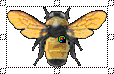
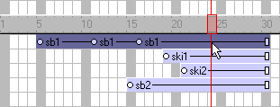
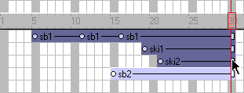
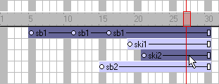
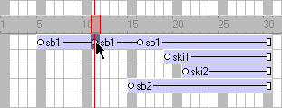
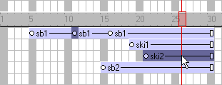
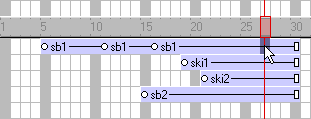

Using Director > Sprites > Selecting sprites
Using Director > Sprites > Selecting sprites |
Selecting sprites
To edit or move a sprite, you must select it. You can select sprites, frames within sprites, and groups of sprites in several different ways.
You use the Arrow tool on the Tool palette to select sprites prior to most operations. You can also select sprites with the Rotate and Skew tool to enable rotation and skewing. See Rotating and skewing sprites.

When selecting sprites, you often want to select a certain frame or range of frames within the sprite instead of the entire sprite. When you make certain changes to a frame within a sprite, it becomes a selectable object called a keyframe. See Editing sprite frames.
A selected sprite appears on the Stage with a double border. When you select a single frame within a sprite, the sprite appears on the Stage with a single border.
Entire sprite selected

Single frame within sprite selected
To select sprites, do one of the following:
Note: The following techniques select an entire sprite only if Edit Sprite Frames is not enabled for the sprite(s) you select.
On the Stage, click a sprite to select the entire sprite span. |
|
You can change sprite preferences so that selecting a sprite on the Stage selects only the current frame instead of the entire sprite. See Changing sprite preferences. |
|
In the Score, click the horizontal line within a sprite bar; do not click the keyframes, the start frame, or the end frame.
 |
|
To select a contiguous range of sprites either on the Stage or in the Score, select a sprite at one end of the range and then Shift-click a sprite at the other end of the range. You can also drag to select all the sprites in an area.
 |
|
To select discontiguous sprites, Control-click (Windows) or Command-click (Macintosh) the discontiguous sprites.
 |
To select a keyframe, do one of the following:
To select just a keyframe, click the keyframe indicator
 . |
|
To select a keyframe and sprites at the same time, Control-click (Windows) or Command-click (Macintosh) the keyframe and the sprites you want to select
 . |
To select a frame within a sprite that isn't a keyframe, do one of the following:
In the Score, Alt-click (Windows) or Option-click (Macintosh) the frame within the sprite.
 |
|
On the Stage, Alt-click (Windows) or Option-click (Macintosh) to select only the current frame of the sprite. The sprite appears on the Stage with a single border. |
To select all the sprites in a channel:
Click the channel number at the left side of the Score.